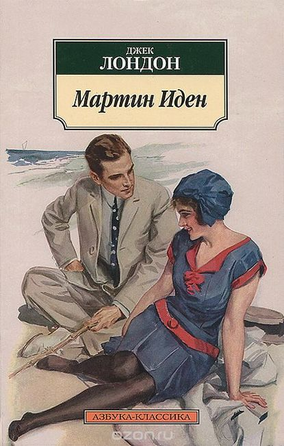

Книгоежка - читай и наслаждайся!
Краткое описание
Классическое произведение Джека Лондона "Мартин Иден"
Подробная информация
- Жанр: зарубежная классика
- Объем: 500 страниц
- Дата написания: 1909г
Описание книги
"Мартин Иден" - роман выдающегося американского писателя Джека Лондона о мечте и успехе.
Простой моряк, в котором легко узнать самого автора, проходит длинный, полный лишений путь к литературному бессмертию... Волею случая оказавшийся в светском обществе, Мартин Иден вдвойне счастлив и удивлен... и пробудившимся в нем творческим даром, и божественным образом юной Руфи Морз ("хрупкий золотистый цветок"), так не похожей на всех людей, которых он знал прежде...
Отныне две цели неотступно стоят перед ним: слава писателя и обладание любимой женщиной. Но мечты непредсказуемы и коварны: неизвестно, когда они сбудутся, и принесет ли это долгожданную радость...
Цена книги: 8 рублей.
Для заказа книги, пожалуйста, свяжитесь с нами, нажав контакты.
Просмотреть книгу Стивена Кинга "Оно"